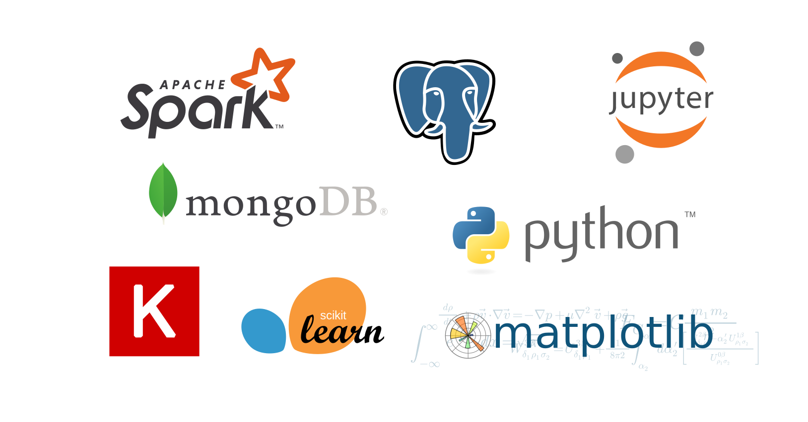

El valor de los datos en el entorno de media
Miguel Sánchez de León Peque
2017-12-13
Sobre nosotros
15+ años
Procesamiento, análisis y visualización de datos
Integración en la nube, migración (Azure)
Sobre mí
Ingeniero industrial (programador, analista...)
I+D en OpenSistemas
github.com/Peque
electiona.com
Solución integral
Análisis y visualización
Tiempo real
Histórico
Simulador de mayorías
Machine learning
Extracción
Sentimiento
Popularidad
Impacto
Clasificación
Sentimiento
Supervisado
Word2vec
Modelos
Resultados
Modelo
Acierto
Support Vector Machine
80%
Convolutional Neural Network
76%
Random forest
74%
Popularidad
¿Se habla bien?
¿Se habla mucho?
¿Se comparte y gusta?
Previsión
Herramientas

¡Gracias!
Datos de contacto
msdeleon@opensistemas.com
www.opensistemas.com
@opensistemas